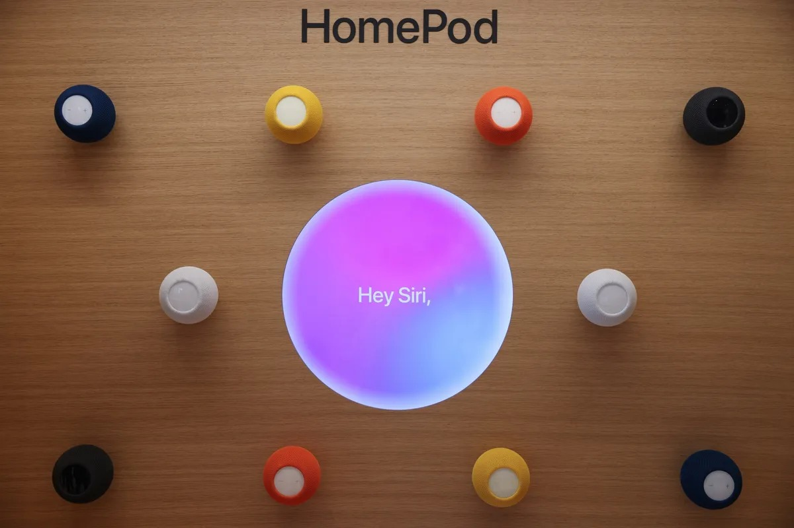

신제품 계획
IT홈의 보도에 따르면, 블룸버그의 마크 거먼이 인용한 소식통에 의하면 Apple은 새로운 Siri AI 비서를 핵심으로 하는 스마트 홈 허브 기기를 곧 출시할 계획입니다.
Apple TV 및 HomePod mini
Apple은 동시에 새로운 Apple TV와 업그레이드된 HomePod mini를 출시할 준비를 하고 있습니다. 이 두 제품은 외관상 "기존 버전과 거의 동일"하지만, Siri AI 기능을 지원하기 위해 내부적으로 성능이 강화된 칩을 탑재할 예정입니다.
스마트 홈 허브 사양
현재 개발 중인 스마트 홈 허브는 두 가지 버전으로 알려졌습니다.
- 반구형 베이스 디자인에 상단에 화면이 장착된 모델
- 새로운 마그네틱 시스템을 통해 벽면에 고정하는 모델
이 기기는 7인치 정사각형 디스플레이를 탑재하며 Siri AI를 중심으로 설계됩니다. tvOS를 기반으로 새롭게 개발된 운영체제를 실행하며, 인터페이스는 tvOS와 watchOS의 디자인 스타일을 결합하고 앱, 아이콘 및 위젯을 지원합니다.
주요 기능
이 기기는 다음과 같은 기능을 지원할 예정입니다.
- FaceTime 화상 통화
- 가정용 보안 모니터링
- HomeKit 스마트 홈 생태계
- Apple Watch와 유사한 맞춤형 워치 페이스 기능
얼굴 인식 및 개인화
가장 주목할 만한 신기능은 얼굴 인식입니다. 이 기기는 화면을 보고 있는 사용자의 신원을 식별하고, 사용자와 화면 사이의 거리를 판단하여 인터페이스 표시 내용을 실시간으로 조정합니다. 시스템은 시청자에 따라 정보의 크기와 표시 방식을 자동으로 조정하여 최적의 브라우징 경험을 제공하며, 현재 사용자에게 개인 일정, 메모 등 맞춤형 콘텐츠를 표시합니다.
추가 제품 및 출시 일정
Apple은 더 늦게 출시될 두 가지 스마트 홈 제품도 개발 중입니다. 여기에는 9인치 디스플레이를 탑재한 고사양 로봇 버전의 홈 허브와 기능이 더욱 향상된 가정용 보안 카메라가 포함됩니다.
Apple은 올해 가을에 새로운 Apple TV와 HomePod mini를 출시할 계획이며, 스마트 홈 허브는 10월에서 내년 초 사이에 출시될 예정입니다.
시장 경쟁
이러한 움직임으로 인해 Apple은 AI 기술이 발전하는 시장에서 Amazon 및 Google과 더욱 직접적으로 경쟁하게 될 전망입니다. Apple의 신형 스마트 기기는 Amazon의 EchoShow 및 Google의 NestHub와 경쟁하게 됩니다.
총평
Apple은 Siri AI를 기반으로 한 새로운 스마트 홈 허브와 업그레이드된 Apple TV, HomePod mini를 출시할 계획입니다. 특히 스마트 홈 허브는 고도화된 얼굴 인식과 개인화 기능을 통해 Amazon 및 Google의 관련 제품들과 경쟁하게 될 것으로 보입니다.
新一代智能家居硬件
Apple 计划推出以全新 Siri AI 助手为核心的智能家居中枢设备，并同步更新相关产品线：
- 新款 Apple TV
- 升级版 HomePod mini（外观基本保持一致，但将搭载更强性能的芯片以支持 Siri AI 功能）
新一代智能家居中枢规格
该核心设备目前有两个版本在研：一种采用半球形底座设计，另一种为磁吸墙挂式。其主要技术参数如下：
- 显示屏：7 英寸方形显示屏
- 操作系统：基于 tvOS 开发的新系统（融合 tvOS 和 watchOS 的设计风格）
- 功能支持：支持应用程序、图标、小组件，并集成 FaceTime 视频通话、家庭安防监控及 HomeKit 生态。
- 交互特性：提供类似 Apple Watch 的可自定义界面功能。
核心 AI 功能与技术
该设备将深度整合 Siri AI，并引入以下关键创新点：
- 面部识别：能够识别用户身份及与屏幕的距离。
- 动态内容调整：系统会根据当前辨认出的用户自动调整信息大小和展示方式，提供个性化的日历、备忘录等内容。
产品路线图与市场竞争
Apple 还计划推出更多高端设备以增强竞争力：
- 后续产品：配备 9 英寸显示屏的高端机器人版家庭中枢，以及更先进的家用安防摄像头。
- 发布时间：Apple TV 和 HomePod mini 预计于今年秋季推出；智能家居中枢计划在 10 月至明年年初期间发布。
- 竞争目标：旨在与亚马逊的 EchoShow 以及谷歌的 NestHub 在 AI 驱动的智能家居市场展开直接竞争。
总结
Apple 计划通过推出搭载 Siri AI 的新一代智能家居中枢、升级版 HomePod mini 及新款 Apple TV 来强化其硬件生态。该系列产品将引入先进的面部识别和动态界面技术，旨在与亚马逊及谷歌在人工智能驱动的智能家居市场展开直接竞争。
新製品の計画
ITホームの報道によると、Bloombergのマーク・ガーマン氏が引用した情報筋に基づき、Appleは新しいSiri AIアシスタントを核としたスマートホームハブデバイスを近日中に発売する計画です。
Apple TVおよびHomePod mini
Appleは同時に、新型のApple TVとアップグレードされたHomePod miniのリリースも準備しています。これら2つの製品は外観上「従来モデルとほぼ同様」ですが、Siri AI機能をサポートするために内部に性能強化されたチップを搭載する予定です。
スマートホームハブの仕様
現在開発中のスマートホームハブには、以下の2種類のバリエーションがあることが報じられています。
- 半球形のベースデザインに上部へディスプレイを搭載したモデル
- 新しいマグネットシステムを通じて壁面に固定するモデル
このデバイスは7インチの正方形ディスプレイを搭載し、Siri AIを中心に設計されています。tvOSをベースとした新しく開発されたオペレーティングシステムを実行し、インターフェースはtvOSとwatchOSのデザインスタイルを融合させ、アプリ、アイコン、ウィジェットをサポートします。
主な機能
このデバイスは以下の機能をサポートする予定です。
- FaceTimeビデオ通話
- 家庭用セキュリティモニタリング
- HomeKitスマートホームエコシステム
- Apple Watchに似たカスタマイズ可能なウォッチフェイス機能
顔認識とパーソナライズ
最も注目すべき新機能は顔認識です。このデバイスは画面を見ているユーザーの身元を特定し、ユーザーと画面の間の距離を判断してインターフェースの表示内容をリアルタイムで調整します。システムは視聴者に応じて情報のサイズや表示方法を自動的に最適化し、パーソナライズされたスケジュールやメモなどのコンテンツを表示します。
追加製品および発売スケジュール
Appleはさらに後日リリースされる2つのスマートホーム製品も開発中です。これには、9インチディスプレイを搭載した高性能なロボット版のホームハブと、機能が強化された家庭用セキュリティカメラが含まれます。
Appleは今年秋に新しいApple TVとHomePod miniを発売する計画であり、スマートホームハブは10月から来年初頭の間に発売される見込みです。
市場競争
これらの動きにより、AppleはAI技術が進展する市場においてAmazonやGoogleとより直接的に競合することになります。Appleの新型スマートデバイスは、AmazonのEchoShowやGoogleのNestHubと競合する見通しです。
まとめ
AppleはSiri AIを基盤とした新スマートホームハブに加え、アップグレード版のApple TVおよびHomePod miniの投入を計画しています。特にスマートホームハブは高度な顔認識とパーソナライズ機能を備えており、AmazonやGoogleの競合製品に対抗する戦略的な位置づけとなります。
New Product Plans
According to a report by IT Home, citing sources from Bloomberg’s Mark Gurman, Apple plans to launch a new smart home hub centered around its Siri AI assistant.
Apple TV and HomePod mini
Simultaneously, Apple is preparing to release a new Apple TV and an upgraded HomePod mini. While these two products are expected to look "nearly identical" to their previous versions, they will feature internally upgraded chips to support enhanced Siri AI capabilities.
Smart Home Hub Specifications
The smart home hub currently under development is reported to be available in two different versions:
- A model featuring a hemispherical base with a screen mounted on top.
- A model that attaches to a wall via a new magnetic system.
The device will feature a 7-inch square display designed around Siri AI. It will run a newly developed operating system based on tvOS, featuring an interface that combines design elements from both tvOS and watchOS while supporting apps, icons, and widgets.
Key Features
The device is expected to support the following features:
- FaceTime video calls
- Home security monitoring
- HomeKit smart home ecosystem
- Customizable "watch face" functionality similar to Apple Watch
Face Recognition and Personalization
One of the most notable new features is face recognition. The device will identify the user looking at the screen and determine the distance between the user and the display to adjust the interface in real-time. The system will automatically adjust the size and layout of information based on the viewer to provide an optimized browsing experience, while displaying personalized content such as personal schedules and notes for the current user.
Additional Products and Release Schedule
Apple is also developing two additional smart home products to be released later: a high-end "robot" version of the home hub featuring a 9-inch display, and an enhanced home security camera.
Apple plans to launch the new Apple TV and HomePod mini this fall, while the smart home hub is expected to debut between October and early next year.
Market Competition
These moves are expected to position Apple as a more direct competitor to Amazon and Google in the rapidly evolving AI market. Apple's new smart devices will compete directly with Amazon's EchoShow and Google's NestHub.
Summary
Apple is preparing to launch a new Siri AI-centered smart home hub alongside updated versions of the Apple TV and HomePod mini. The new hub will feature advanced face recognition and personalized interfaces, positioning Apple as a direct competitor to Amazon and Google in the smart home market.

